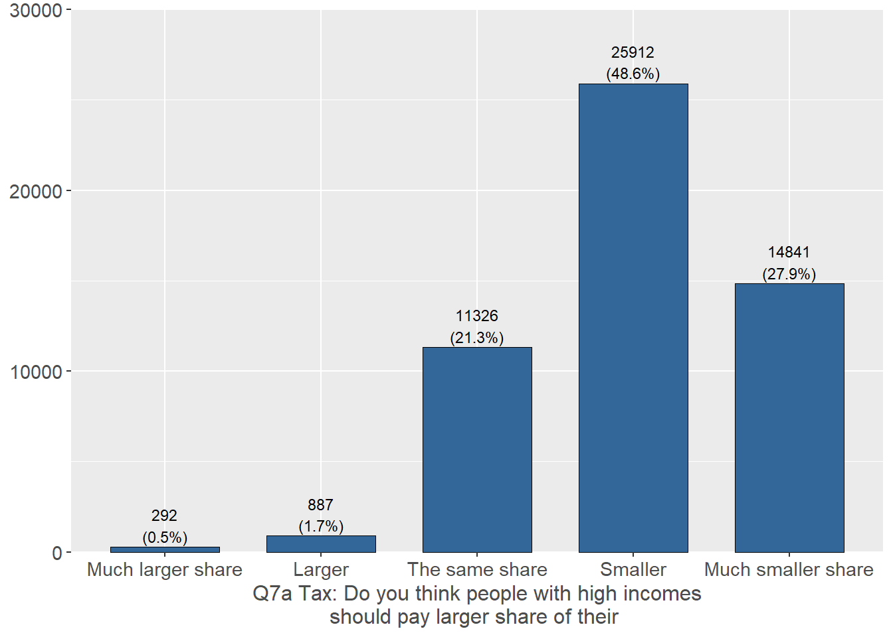
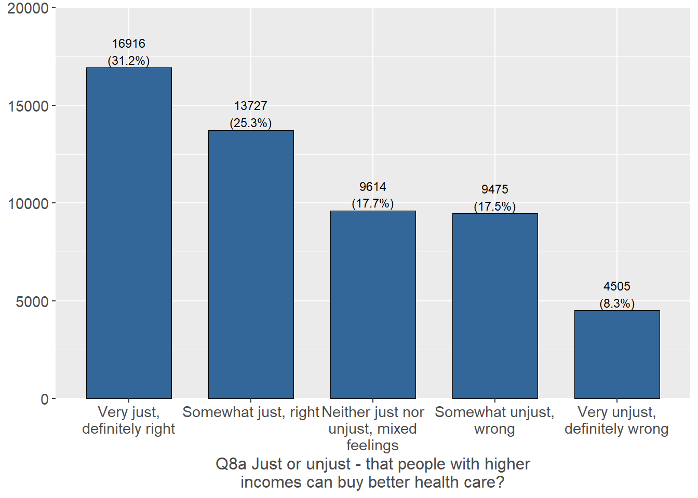
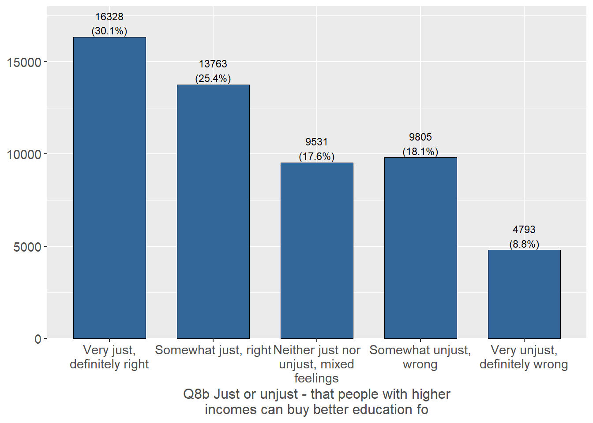
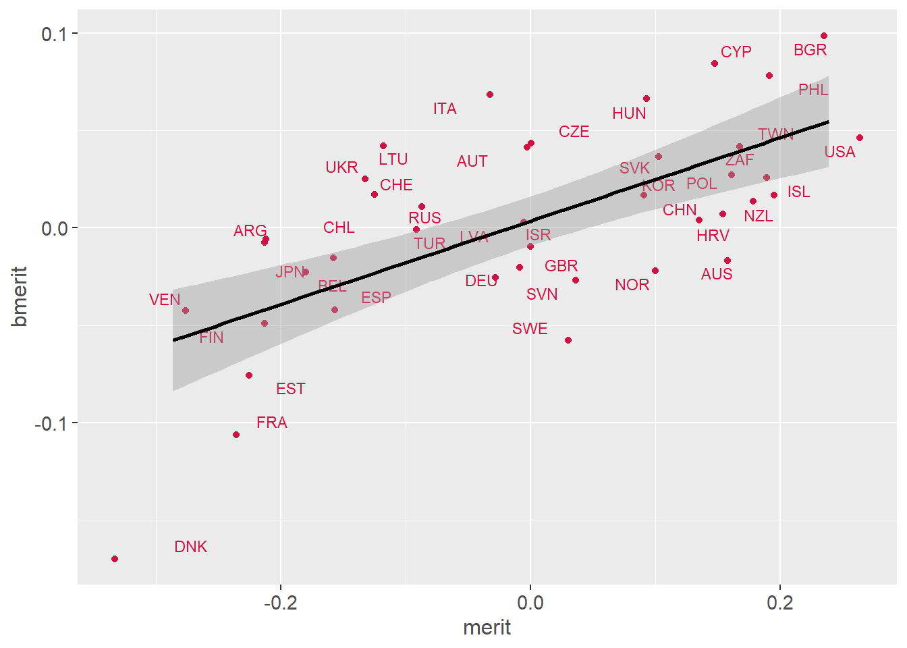
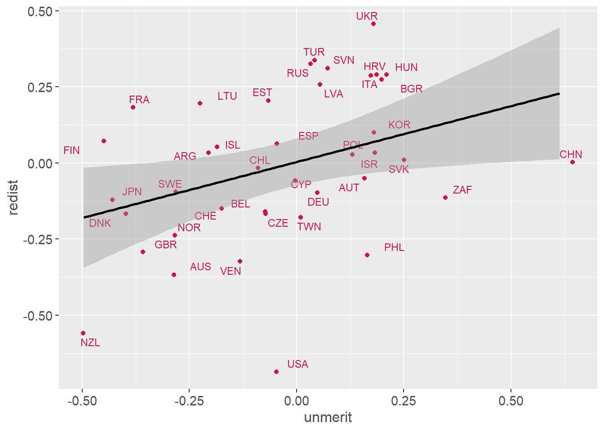
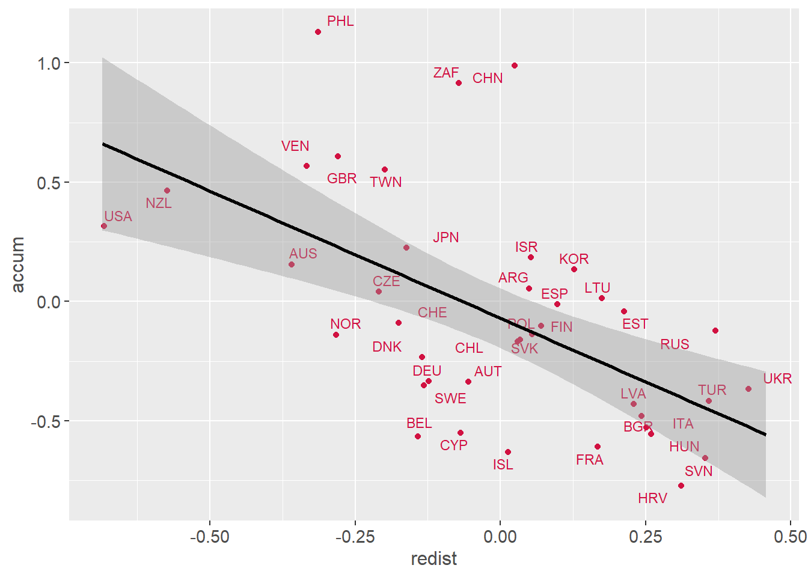

Meritocracy and distributive preferences ISSP
viernes 29 mayo 2020 14:07:28
Hacer una descripcion de la linea de trabajo en general.
Libraries
library(sjPlot)
library(sjmisc) # several functions,ej read_stata
library(descr)
library(memisc) # codebook
library(psych) # cor2latex
library(corrplot) # graph correlations
library(lavaan)
library(stargazer)
library(semTools)
library(plyr) # count
library(dplyr)
library(car) # recode
library(ggplot2)
library(Hmisc)
library(tidyverse)
library(data.table)
library(stringr)
library(countrycode)
library(lme4)
library(texreg)
library(mice)
library(ggrepel) # for scatter labels in sjp.scatter
library(semPlot)
library(haven)
library(sjlabelled)
library(kableExtra)Load data
load(file = "input/data/proc/redistrib.rda")1 Descriptives
# Summary table
stargazer(redistrib[-c(1,2)], type="html") | Statistic | N | Mean | St. Dev. | Min | Pctl(25) | Pctl(75) | Max |
| income_dif | 54,400 | 3.900 | 1.100 | 1.000 | 3.000 | 5.000 | 5.000 |
| unemployed | 54,698 | 3.900 | 0.990 | 1.000 | 3.000 | 5.000 | 5.000 |
| taxes | 53,258 | 4.000 | 0.780 | 1.000 | 4.000 | 5.000 | 5.000 |
| health | 54,237 | 2.500 | 1.300 | 1.000 | 1.000 | 4.000 | 5.000 |
| educ | 54,220 | 2.500 | 1.300 | 1.000 | 1.000 | 4.000 | 5.000 |
# Summary table to latex
sink("output/results/desctab_red.txt")
stargazer(redistrib[-c(1,2)], type="text"); sink()============================================================== Statistic N Mean St. Dev. Min Pctl(25) Pctl(75) Max ————————————————————– income_dif 54,400 3.900 1.100 1.000 3.000 5.000 5.000 unemployed 54,698 3.900 0.990 1.000 3.000 5.000 5.000 taxes 53,258 4.000 0.780 1.000 4.000 5.000 5.000 health 54,237 2.500 1.300 1.000 1.000 4.000 5.000 educ 54,220 2.500 1.300 1.000 1.000 4.000 5.000 ————————————————————–
# Simple graph:
sjPlot::plot_frq(redistrib$income_dif, show.values = TRUE, coord.flip = TRUE)## [[1]]##
## [[2]]##
## [[3]]
##
## [[4]]
##
## [[5]]
# 2.3 Measurement structure
# Estimación del modelo
load("input/data/proc/redistrib.rda")
cfa_red1 <- '
# latent variables
redist =~ income_dif + unemployed + taxes
accum =~ health + educ'
fit_red1 <- cfa(cfa_red1,data=redistrib, missing = "ML")
# summary(fit_red1, fit.measures=TRUE,standardized=TRUE)
# Path
semPlot::semPaths(fit_red1,layout = "tree2", rotation = 2,
intercepts = FALSE, style = "lisrel", curvePivot = TRUE,
cardinal = TRUE) dev.copy(png,"output/results/path_red1.png",width=750,height=600)## png
## 3 dev.off() ## png
## 2## ## ## ## ### ## ### ## ## ## ##ARREGLAR LOS DIAGRAMAS.
# Path - with results
semPlot::semPaths(fit_red1,"std",layout = "tree2", rotation = 2,
intercepts = FALSE, style = "lisrel", curvePivot = TRUE,
cardinal = TRUE, edge.color = "black", residScale = 10) dev.copy(png,"output/results/path_red1_res.png",
width=750,height=600); dev.off() ## png
## 3## png
## 2 # Categorical
fit_red1c <- cfa(cfa_red1,data=redistrib,
ordered = c("income_dif","unemployed","taxes", "health",
"educ"))
# summary(fit_red1c, fit.measures=TRUE,standardized=TRUE)
#
sum_fit<- bind_rows(fitmeasures(fit_red1)[c("chisq.scaled","df","cfi","cfi.scaled","cfi.robust","rmsea","rmsea.scaled","rmsea.robust")])
sum_fit$mod <- c("Model 1")
sum_fit$est <- c("MLR")
#sum_fit <- select(sum_fit,mod,est,everything())
colnames <- c("Model","Estimator","$\\chi^2$","df","CFI","CFI.sca","CFI.rob","RMSEA","RMSEA.sca","RMSEA.rob")
sumtable01<- kable(sum_fit,digits = 3,format = "html",row.names = F,booktabs=T, caption = "Summary fit indices",col.names = colnames,escape = FALSE) %>%
kable_styling(full_width = F) %>%
collapse_rows(columns = 1,valign = "middle") %>%
footnote(number = c("Model 1: fixed order by percepction/preferenc"))
sumtable01| Model | Estimator | \(\chi^2\) | df | CFI | CFI.sca | CFI.rob | RMSEA | RMSEA.sca | RMSEA.rob |
|---|---|---|---|---|---|---|---|---|---|
| 4 | 1 | 0.034 | Model 1 | MLR | |||||
| 1 Model 1: fixed order by percepction/preferenc |
# 2.4 Factor scores --------------------- --------
# Multiple imputation (para recuperar missings en scores)
# generate 5 multiple complete datasets
out <- mice(redistrib[3:7], m=5) ##
## iter imp variable
## 1 1 income_dif unemployed taxes health educ
## 1 2 income_dif unemployed taxes health educ
## 1 3 income_dif unemployed taxes health educ
## 1 4 income_dif unemployed taxes health educ
## 1 5 income_dif unemployed taxes health educ
## 2 1 income_dif unemployed taxes health educ
## 2 2 income_dif unemployed taxes health educ
## 2 3 income_dif unemployed taxes health educ
## 2 4 income_dif unemployed taxes health educ
## 2 5 income_dif unemployed taxes health educ
## 3 1 income_dif unemployed taxes health educ
## 3 2 income_dif unemployed taxes health educ
## 3 3 income_dif unemployed taxes health educ
## 3 4 income_dif unemployed taxes health educ
## 3 5 income_dif unemployed taxes health educ
## 4 1 income_dif unemployed taxes health educ
## 4 2 income_dif unemployed taxes health educ
## 4 3 income_dif unemployed taxes health educ
## 4 4 income_dif unemployed taxes health educ
## 4 5 income_dif unemployed taxes health educ
## 5 1 income_dif unemployed taxes health educ
## 5 2 income_dif unemployed taxes health educ
## 5 3 income_dif unemployed taxes health educ
## 5 4 income_dif unemployed taxes health educ
## 5 5 income_dif unemployed taxes health educ D1 <- complete(out, 1)
D2 <- complete(out, 2)
D3 <- complete(out, 3)
D4 <- complete(out, 4)
D5 <- complete(out, 5)
# fit model for each complete dataset
fit1 <- cfa(cfa_red1, data=D1)
fit2 <- cfa(cfa_red1, data=D2)
fit3 <- cfa(cfa_red1, data=D3)
fit4 <- cfa(cfa_red1, data=D4)
fit5 <- cfa(cfa_red1, data=D5)
# predict scores for all models
p1 <- predict(fit1)
p2 <- predict(fit2)
p3 <- predict(fit3)
p4 <- predict(fit4)
p5 <- predict(fit5)
# compute 'average' across 5 sets of scores:
scores <- (p1 + p2 + p3 + p4 + p5)/5
#Generate factor scores
scores_dat=as.data.frame(scores)
dim(scores_dat)## [1] 56021 2 str(scores_dat)## 'data.frame': 56021 obs. of 2 variables:
## $ redist: num -0.1259 0.0261 0.1853 0.5712 0.6562 ...
## $ accum : num 0.47 0.46 -1.321 -1.001 0.419 ...# Adaptar base para agregar factor scores (sacar todos NA)
dim(redistrib)## [1] 56021 7 redistrib_m=redistrib[rowSums(is.na(redistrib[3:7]))!=5,]
dim(redistrib_m)## [1] 55822 7# Merge with factor scores
redistrib_sco=cbind(redistrib,scores)
# Check
summary(redistrib_sco$redist)## Min. 1st Qu. Median Mean 3rd Qu. Max.
## -2.48 -0.37 0.09 0.00 0.49 0.97 summary(redistrib_sco$accum)## Min. 1st Qu. Median Mean 3rd Qu. Max.
## -1.37 -1.01 -0.31 0.00 0.82 2.39 # Save factor scores
# save(redistrib_sco, file="input/data/proc/redistrib_sco.rda")# 4. MODELS A: MERIT & REDISTRIB ========= =
# 4.1 Merge objects --------------------- ----
load("input/data/proc/redistrib.rda")
load("input/data/proc/getahead.rda")
load("input/data/proc/detearn.rda")
aux1 <- merge(getahead,redistrib,by=c("id","v5"))
merit_redist=merge(aux1,detearn,by=c("id","v5"))
# 4.2 Measurement & structural model ---- --------
# Measurement simple
cfa_mer_red1 <- '
# latent variables
merit =~ hwork + ambition
parent=~ wealthy + pareduc
backg=~ race + gender
network=~ people + polcone
bmerit =~ welljob + hardjob
need=~ family + child
redist =~ income_dif + unemployed + taxes
accum =~ health + educ'
fit_mer_red1 <- cfa(cfa_mer_red1,data=merit_redist,
missing = "ML")
# summary(fit_mer_red1, fit.measures=TRUE,standardized=TRUE)
# Path
semPlot::semPaths(fit_mer_red1,layout = "circle", rotation = 3,
intercepts = FALSE, style = "lisrel", curvePivot = TRUE,
sizeMan = 4, sizeLat = 6) dev.copy(png,"output/results/path_mer_red1.png",width=800,
height=650); dev.off()## png
## 3## png
## 2 fit_mer_redc <- cfa(cfa_mer_red1,data=merit_redist,
ordered = names(merit_redist[3:10,19:29]))
# summary(fit_mer_redc, fit.measures=TRUE,standardized=TRUE)
sum_fit<- bind_rows(fitmeasures(fit_mer_redc)[c("chisq.scaled","df","cfi","cfi.scaled","cfi.robust","rmsea","rmsea.scaled","rmsea.robust")])
sum_fit$mod <- c("Model 1")
sum_fit$est <- c("MLR")
#sum_fit <- select(sum_fit,mod,est,everything())
colnames <- c("Model","Estimator","$\\chi^2$","df","CFI","CFI.sca","CFI.rob","RMSEA","RMSEA.sca","RMSEA.rob")
sumtable01<- kable(sum_fit,digits = 3,format = "html",row.names = F,booktabs=T, caption = "Summary fit indices",col.names = colnames,escape = FALSE) %>%
kable_styling(full_width = F) %>%
collapse_rows(columns = 1,valign = "middle") %>%
footnote(number = c("Model 1: fixed order by percepction/preferenc"))
sumtable01| Model | Estimator | \(\chi^2\) | df | CFI | CFI.sca | CFI.rob | RMSEA | RMSEA.sca | RMSEA.rob |
|---|---|---|---|---|---|---|---|---|---|
| 2852 | 91 | 1 | 0.99 | 0.026 | 0.032 | Model 1 | MLR | ||
| 1 Model 1: fixed order by percepction/preferenc |
# CFA with secon order unmerit
cfa_mer_red2 <- '
# latent variables
merit =~ hwork + ambition
parent=~ wealthy + pareduc
backg=~ race + gender
network=~ people + polcone
bmerit =~ welljob + hardjob
need=~ family + child
redist =~ income_dif + unemployed + taxes
accum =~ health + educ
unmerit =~ parent + backg + network
'
fit_mer_red2 <- cfa(cfa_mer_red2,data=merit_redist,
missing = "ML")
# summary(fit_mer_red2, fit.measures=TRUE,standardized=TRUE)
sum_fit<- bind_rows(fitmeasures(fit_mer_red2)[c("chisq.scaled","df","cfi","cfi.scaled","cfi.robust","rmsea","rmsea.scaled","rmsea.robust")])
sum_fit$mod <- c("Model 1")
sum_fit$est <- c("MLR")
#sum_fit <- select(sum_fit,mod,est,everything())
colnames <- c("Model","Estimator","$\\chi^2$","df","CFI","CFI.sca","CFI.rob","RMSEA","RMSEA.sca","RMSEA.rob")
sumtable01<- kable(sum_fit,digits = 3,format = "html",row.names = F,booktabs=T, caption = "Summary fit indices",col.names = colnames,escape = FALSE) %>%
kable_styling(full_width = F) %>%
collapse_rows(columns = 1,valign = "middle") %>%
footnote(number = c("Model 1: fixed order by percepction/preferenc"))
sumtable01 | Model | Estimator | \(\chi^2\) | df | CFI | CFI.sca | CFI.rob | RMSEA | RMSEA.sca | RMSEA.rob |
|---|---|---|---|---|---|---|---|---|---|
| 101 | 0.97 | 0.032 | Model 1 | MLR | |||||
| 1 Model 1: fixed order by percepction/preferenc |
# Factor scores
fscores <- as.data.frame(lavPredict(fit_mer_red2))
# Correlations
cormat=cor(fscores[c(7,8,1,9,5,6)],
use="pairwise.complete.obs")
corrplot.mixed(cormat)
#save
# dev.copy(png,"output/results/corplot_totscores.png",width=600,
# height=600); dev.off()
# Path
semPlot::semPaths(fit_mer_red2,layout = "tree", rotation = 2,
intercepts = FALSE, style = "lisrel", curvePivot = TRUE,
sizeMan = 4, sizeLat = 6) dev.copy(png,"output/results/path_mer_red2.png",width=800,
height=650); dev.off() ## png
## 3## png
## 2 # Structural model
sem_mer_red1 <- '
# latent variables
merit =~ hwork + ambition
parent=~ wealthy + pareduc
backg=~ race + gender
network=~ people + polcone
bmerit =~ welljob + hardjob
need=~ family + child
redist =~ income_dif + unemployed + taxes
accum =~ health + educ
unmerit =~ parent + backg + network
# regressions
redist + accum ~ merit + unmerit + bmerit + need
'
fitsem_mer_red1 <- sem(sem_mer_red1,data=merit_redist,
missing = "ML")
# summary(fitsem_mer_red1, fit.measures=TRUE,standardized=TRUE)
# Path
semPlot::semPaths(fitsem_mer_red1,layout = "tree", rotation = 2,
intercepts = FALSE, style = "lisrel", curvePivot = TRUE,
sizeMan = 4, sizeLat = 6)
# dev.copy(png,"output/results/path_mer_red2.png",width=800,
# height=650); dev.off()
# saque este argumento del codigo de abajo op=="~"
# Table
tabreg=subset(standardizedsolution(fitsem_mer_red1) ,op=="~", select=c(lhs,rhs,est.std,z))
tabreg2=subset(tabreg, select=c(lhs,rhs,est.std,z))
tabredist=subset(tabreg2,lhs=="redist",
select=rhs:z)
tabaccumt=subset(tabreg2,lhs=="accum",select=est.std:z)
tabtot=cbind(tabredist,tabaccumt)
tabtot2=rbind(tabtot$est.std,tabtot$z)
# End sec 4 ----------------------------- # 5.2 Descriptives
load("input/data/proc/pref.rda")
# Adjust data
pref_agg=aggregate(pref, by=list(pref$v5c),
FUN=mean, na.rm=TRUE)
names(pref_agg)[names(pref_agg)=="Group.1"] <- "v5c"
# Macro descriptives
hist(pref_agg$gini_net) table(pref_agg$accum) ############# no encuentro esta variable accum## < table of extent 0 > # plot_scatter(pref_agg, gini_net, accum,
# dot.labels = pref_agg$v5c,
#fit.line = "lm",
#show.ci = TRUE)
#table(pref_agg$redis)
#plot_scatter(pref_agg, gini_net, redist,
#dot.labels = pref_agg$v5c,
#fit.line = TRUE,
#show.ci = TRUE )
# Sin ZAF outlier (igual, no cambia)
# pref_agg2 <- pref_agg[which(pref_agg$v5c!='ZAF'), ]
# plot_scatter(pref_agg2$gini_net,pref_agg2$redist,
# dot.labels = pref_agg2$v5c,
# fit.line = TRUE,
# show.ci = TRUE
# )# 5.3 Models
# Models SEM simple
sem_b <- '
# latent variables
redist =~ income_dif + unemployed + taxes
accum =~ health + educ
redist + accum ~ univ + quintile + sstatus + gini_market'
fit_2c <- sem(sem_b,data=pref, ordered = c("income_dif",
"unemployed","taxes", "health", "educ"))
#summary(fit_2c, fit.measures=TRUE,standardized=TRUE)
#cnames <- c("Factor","Indicator","Loading (MLR)","Loading (DWLS)")
#kable(left_join(x = standardizedsolution(fit_2c) %>% filter(op=="=~") %>% select(lhs,rhs,est.std),y = #standardizedsolution(fit_2c) %>% filter(op=="=~") %>% select(lhs,rhs,est.std),c("lhs","rhs")),format = #"markdown",digits = 2,col.names = cnames, caption = "Factor loadings")
sum_fit<- bind_rows(fitmeasures(fit_2c)[c("chisq.scaled","df","cfi","cfi.scaled","cfi.robust","rmsea","rmsea.scaled","rmsea.robust")])
sum_fit$mod <- c("Model 1")
sum_fit$est <- c("MLR")
#sum_fit <- select(sum_fit,mod,est,everything())
colnames <- c("Model","Estimator","$\\chi^2$","df","CFI","CFI.sca","CFI.rob","RMSEA","RMSEA.sca","RMSEA.rob")
sumtable01<- kable(sum_fit,digits = 3,format = "html",row.names = F,booktabs=T, caption = "Summary fit indices wave 01",col.names = colnames,escape = FALSE) %>%
kable_styling(full_width = F) %>%
collapse_rows(columns = 1,valign = "middle") %>%
footnote(number = c("Model 1: fixed order by percepction/preferenc"));
sumtable01| Model | Estimator | \(\chi^2\) | df | CFI | CFI.sca | CFI.rob | RMSEA | RMSEA.sca | RMSEA.rob |
|---|---|---|---|---|---|---|---|---|---|
| 839 | 16 | 1 | 1 | 0.028 | 0.035 | Model 1 | MLR | ||
| 1 Model 1: fixed order by percepction/preferenc |
# Multilevel (with factor scores) #No funciono nada de este apartado.
# check simple regresion
#ols_prefred=lm(redist ~ univ + quintile + sstatus + gini_market)
# summary(ols_prefred) # ok, similar SEM, scores OK
# Multilevel models redist
# Null
# mlprefred_0 = lmer(redist ~ 1 + (1 | v5c))
# screenreg(mlprefred_0) # de library texreg
#
# # Graph
# sjp.lmer(mlprefred_0, sort.est="(Intercept)")
#
# ICC
# varcomp=as.data.frame(VarCorr(mlprefred_0))
# tau00=varcomp[1,4]
# sigma2=varcomp[2,4]
# tau00/(tau00+sigma2)
# Individual level vars
# mlprefred_1 = lmer(redist_n ~ 1 + univ +
# as.factor(quintile_miss) + sstatus + sex + age +
# (1 | v5))
# screenreg(mlprefred_1)
#
# # Macro level vars
# mlprefred_2 = lmer(redist ~ 1 + univ +
# as.factor(quintile_miss)+ sstatus + gini_market +
# univ_g + (1 | v5))
# screenreg(mlprefred_2)
#
# # Multilevel models accumulation
#
# Null
# mlaccum_0 = lmer(accum ~ 1 + (1 | v5c))
# screenreg(mlaccum_0) # de library texreg
#
# Graph
# sjp.lmer(mlaccum_0, sort.est="(Intercept)")
#
# ICC
# varcomp=as.data.frame(VarCorr(mlaccum_0))
# tau00=varcomp[1,4]
# sigma2=varcomp[2,4]
# tau00/(tau00+sigma2)
#
# # Individual level vars
# mlaccum_1 = lmer(accum ~ 1 + univ + as.factor(quintile_miss) +
# sstatus + sex + age + univ*sex + age*age + (1 | v5))
# screenreg(mlaccum_1)
#
# Macro level vars
# mlaccum_2 = lmer(accum ~ 1 + univ_g + as.factor(quintile_miss) +
# (sstatus -f_sstatus) + gini_net + (1 | v5))
# screenreg(mlaccum_2)
# Random slope & cross-level
# mlaccum_3 = lmer(accum ~ 1 + univ_g + f_sstatus + gini_net +
# gini_net* f_sstatus + (1 + f_sstatus | v5))
# screenreg(mlaccum_3)
# # Graphs
# sjp.lmer(mlaccum_3, sort.est = "(Intercept)")
# sjp.lmer(mlaccum_3, type = "rs.ri")
#
# mlaccum_4 = lmer(accum ~ 1 + univ + f_sstatus + gini_net + gini_net*f_sstatus + hhincome + (1 + hhincome | v5))
# screenreg(mlaccum_4)
# End sec. 5 ---------------------------- 2 6. MODELS C: MERITOCRACY
# 6.2 Descriptives
load("input/data/proc/meritocracy.rda")
# Adjust data
merit_agg=aggregate(meritocracy, by=list(meritocracy$v5c),
FUN=mean, na.rm=TRUE)
names(merit_agg)[names(merit_agg)=="Group.1"]="v5c"
# names(merit_agg)
# dim(merit_agg)
# Macro descriptives
# agregar Polichoric.
# Macro level corr
corMat <- cor(merit_agg[c("merit","unmerit","bmerit","need","gini_net","gini_market","j_fi_index")], use="pairwise.complete.obs") # estimar matriz pearson
options(digits=2)
corMat # muestra matriz## merit unmerit bmerit need gini_net gini_market j_fi_index
## merit 1.000 0.465 0.656 -0.036 0.12 -0.038 0.177
## unmerit 0.465 1.000 0.546 0.588 0.42 -0.029 -0.341
## bmerit 0.656 0.546 1.000 0.401 0.19 -0.126 -0.021
## need -0.036 0.588 0.401 1.000 0.49 -0.023 -0.449
## gini_net 0.123 0.416 0.192 0.491 1.00 0.483 -0.297
## gini_market -0.038 -0.029 -0.126 -0.023 0.48 1.000 0.194
## j_fi_index 0.177 -0.341 -0.021 -0.449 -0.30 0.194 1.000 # M=cor(merit_agg) # matriz simple
corrplot.mixed(corMat) ##### la mayoria de los str.scatter precentan problemas en los limites "subindice fuera de limites.
plot_scatter(merit_agg, gini_net, bmerit,
dot.labels = merit_agg$v5c,
fit.line = "lm",
show.ci = TRUE) # Save
# dev.copy(png,"output/results/gini_bmerit.png"); dev.off()
plot_scatter(merit_agg, gini_net,unmerit,
dot.labels = merit_agg$v5c,
fit.line = "lm",
show.ci = TRUE) 
plot_scatter(merit_agg, gini_net,need,
dot.labels = merit_agg$v5c,
fit.line = "lm",
show.ci = TRUE) # Save
#dev.copy(png,"output/results/fi_need.png"); dev.off()
Imagen provisoria
plot_scatter(merit_agg, j_fi_index, need,
dot.labels = merit_agg$v5c,
fit.line = "lm",
show.ci = TRUE) # Save
# dev.copy(png,"output/results/gini_fi.png"); dev.off() Este objeto tampoco estaba en la carpeta. # Sin outliers
merit_agg2 <- merit_agg[which(merit_agg$v5c!="ZAF" & merit_agg$v5c!="CHN" & merit_agg$v5c!="CHL" ), ]
plot_scatter(merit_agg2, gini_net, unmerit,
dot.labels = merit_agg2$v5c,
fit.line = TRUE,
show.ci = TRUE
) # 6.3 Models
# Multilevel (with factor scores)
load("input/data/proc/meritocracy.rda")
# Adjust some variables
meritocracy$Quintile=as.factor(meritocracy$quintile_miss)
levels(meritocracy$Quintile)[6] <- "miss"
# check simple regresion
ols_merit=lm(merit ~ univ + Quintile + sstatus + gini_net, data = meritocracy)
summary(ols_merit) # ok, similar SEM, scores OKCall: lm(formula = merit ~ univ + Quintile + sstatus + gini_net, data = meritocracy)
Residuals: Min 1Q Median 3Q Max -2.1224 -0.2899 0.0311 0.3453 0.9320
Coefficients: Estimate Std. Error t value Pr(>|t|)
(Intercept) -0.190897 0.008870 -21.52 < 0.0000000000000002 univ 0.057645 0.005463 10.55 < 0.0000000000000002 Quintile2 0.016282 0.006964 2.34 0.0194 *
Quintile3 0.021357 0.006974 3.06 0.0022 ** Quintile4 0.027356 0.007002 3.91 0.000094 Quintile5 0.028543 0.007133 4.00 0.000063 Quintilemiss 0.009673 0.006860 1.41 0.1585
sstatus 0.000129 0.000178 0.72 0.4686
gini_net 0.004705 0.000208 22.67 < 0.0000000000000002 *** — Signif. codes: 0 ‘’ 0.001 ’’ 0.01 ’’ 0.05 ‘.’ 0.1 ’ ’ 1
Residual standard error: 0.47 on 54625 degrees of freedom (387 observations deleted due to missingness) Multiple R-squared: 0.0116, Adjusted R-squared: 0.0114 F-statistic: 79.9 on 8 and 54625 DF, p-value: <0.0000000000000002
# Multilevel models merit
# Null
mlmerit_0 = lmer(merit ~ 1 + (1 | v5c), data = meritocracy)
htmlreg(mlmerit_0) # de library texreg | Model 1 | ||
|---|---|---|
| (Intercept) | -0.01 | |
| (0.03) | ||
| AIC | 66347.55 | |
| BIC | 66374.29 | |
| Log Likelihood | -33170.77 | |
| Num. obs. | 55021 | |
| Num. groups: v5c | 40 | |
| Var: v5c (Intercept) | 0.03 | |
| Var: Residual | 0.19 | |
| p < 0.001, p < 0.01, p < 0.05 | ||
# Graph
# sjp.lmer(mlmerit_0, sort.est="(Intercept)") No encuentro el paquete.
# ICC
varcomp=as.data.frame(VarCorr(mlmerit_0))
tau00=varcomp[1,4]
sigma2=varcomp[2,4]
tau00/(tau00+sigma2)[1] 0.11
# Individual level vars
mlmerit_1 = lmer(merit ~ 1 + univ + quintile_miss +
sstatus + sex + age + (1 | v5), data = meritocracy)
htmlreg(mlmerit_1)| Model 1 | ||
|---|---|---|
| (Intercept) | 0.01 | |
| (0.03) | ||
| univ | 0.04*** | |
| (0.01) | ||
| quintile_miss | 0.01*** | |
| (0.00) | ||
| sstatus | -0.00 | |
| (0.00) | ||
| sex | -0.01 | |
| (0.00) | ||
| age | -0.00*** | |
| (0.00) | ||
| AIC | 65233.10 | |
| BIC | 65304.31 | |
| Log Likelihood | -32608.55 | |
| Num. obs. | 54213 | |
| Num. groups: v5 | 40 | |
| Var: v5 (Intercept) | 0.02 | |
| Var: Residual | 0.19 | |
| p < 0.001, p < 0.01, p < 0.05 | ||
# Macro level vars
mlmerit_2 = lmer(bmerit ~ 1 + gini_net + (1 | v5), data = meritocracy)
htmlreg(mlmerit_2) | Model 1 | ||
|---|---|---|
| (Intercept) | -0.04 | |
| (0.04) | ||
| gini_net | 0.00 | |
| (0.00) | ||
| AIC | -14937.09 | |
| BIC | -14901.43 | |
| Log Likelihood | 7472.55 | |
| Num. obs. | 55021 | |
| Num. groups: v5 | 40 | |
| Var: v5 (Intercept) | 0.00 | |
| Var: Residual | 0.04 | |
| p < 0.001, p < 0.01, p < 0.05 | ||
# Models meritocracy and preferences
load("input/data/proc/meritocracy.rda")
load("input/data/proc/redistrib_sco.rda")
mer_pref=merge(meritocracy, redistrib_sco, by=c("id"))
# names(mer_pref)
mer_pref_agg=aggregate(mer_pref, by=list(mer_pref$v5c),
FUN=mean, na.rm=TRUE)
names(mer_pref_agg)[names(mer_pref_agg)=="Group.1"]="v5c"
# names(mer_pref_agg)
# dim(mer_pref_agg)
# Graphs # mismo problemas de subindices.
plot_scatter(mer_pref_agg,merit , bmerit,
dot.labels = mer_pref_agg$v5c,
fit.line = lm,
show.ci = TRUE)
plot_scatter(mer_pref_agg, merit, redist,
dot.labels = mer_pref_agg$v5c,
fit.line = lm,
show.ci = TRUE) # Save
# dev.copy(png,"loc_merit_pref_int/results/merit_redis.png"); dev.off()
plot_scatter(mer_pref_agg, unmerit,redist,
dot.labels = mer_pref_agg$v5c,
fit.line = "lm",
show.ci = TRUE) 
# Save
# dev.copy(png,"loc_merit_pref_int/results/unmerit_redis.png"); dev.off()
# plot_scatter(mer_pref_agg$redist,mer_pref_agg$accum)
plot_scatter(mer_pref_agg, redist,accum,
dot.labels = mer_pref_agg$v5c,
fit.line = "lm",
show.ci = TRUE) 

IMAGEN PROVISORIA